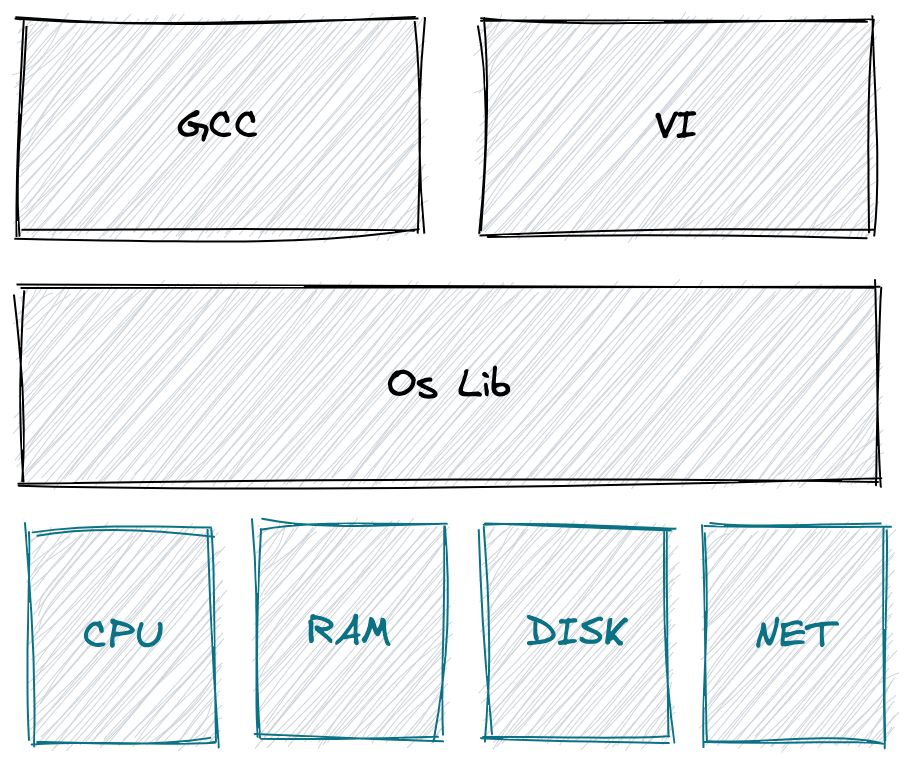

eraft 精解课程
我们团队致力于解读国外优秀的分布式存储相关开源课程，下面是课程体系图 我们始终坚信优秀的本科教学不应该是照本宣科以及应付考试，一门优秀的课程，应该具备让学生学会思考、动手实践、找到问题、反复试错、并解决问题的能力，同时应该尽量用最直白，最简单的语言传达关键的知识点。作为计算机工业界的工作者，我相信做课程和做技术一样，并不是越复杂越好，应该尽量的让设计出来的东西简单化。 关注我们的最新动态，欢迎关注 https://www.zhihu.com/people/liu-jie-84-52 接下来我们进入正题，如何实现一个分布式系统。

MIT 操作系统系列-操作系统的特性和系统调用
隔离性 (isolation)
在介绍隔离性之前，我们先看看如果没有操作系统的存在。如下图所示，用户程序 gcc 和 vi 直接通过系统库的方式使用硬件资源。

这会导致哪些问题呢？
防御性 （Defensive）
操作系统要确保它的所有组件都能正常的工作，能随时抵御来自应用程序的攻击，它需要具备一下的防御特性捐赠
整理这本书耗费了我们大量的时间和精力。如果你觉得有帮助，一瓶矿泉水的价格支持我们继续输出优质的分布式存储知识体系，2.99¥，感谢大家的支持。

遵循MIT协议开源。
感谢 「赫蹏」 提供如此优秀的中文排版系统